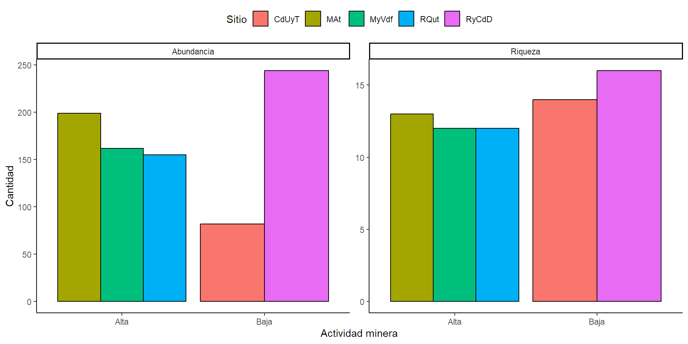
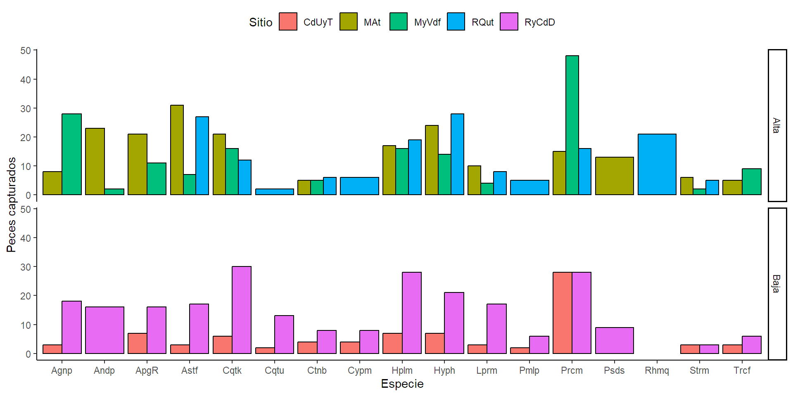
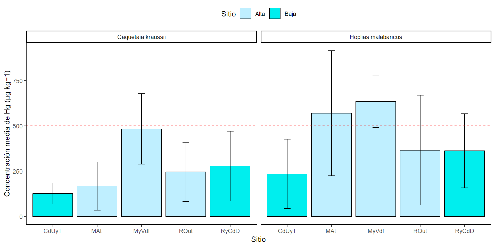
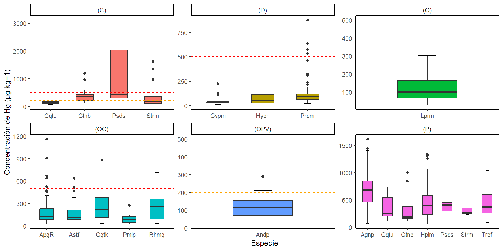
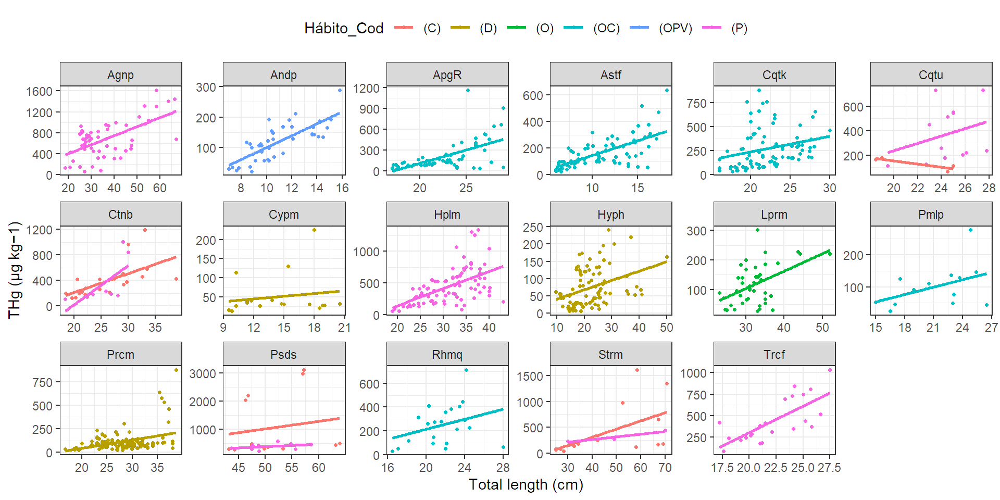

Manipulación de datos multivariantes con R
Introducción al tidyverse
- El tidyverse es un paquete de R que facilita el procesamiento de datos, agrupando funciones para el manejo de datos de varios paquetes.
- pipe (
%>%): Es la función pricipal que permite encadenar funciones de forma eficiente, mejorando la legibilidad del código. - Funciones principales:
abbreviate(),distinct(),filter(),select(),mutate(),group_by(),summarise(), yarrange(). - Funciones avanzadas:
pivot_longer(),pivot_wider(),across(),unite(),separate(). - Otras funciones avanzadas:
left_join(),rigth_join(),full_join(),inner_join()()`.
Datos.
Descipción.
Los datos suministrados en la conducta de entrada incluye información sobre el impacto de la minería de oro a lo largo en cinco zonas de la cuenca del río Atrato (región del Pacífico de Colombia), en términos de la concentración de mercurio (THg) y mertimercurio (MeHg) dada la intensidad de la misma. Las muestras de peces que se registran en el Excel son especies representativas que consumen habitualmente los habitantes de las regiones y están presentes en la pesquería durante todo el año recolectadas por los pescadores utilizando trasmallos, atarrayas, corrales y cañas de pescar, durante varias campañas de pesca en las zonas de estudio entre abril y diciembre de 2019 (Salazar-Camacho et al., 2021).
Importación de datos.
Funciones principales del tidyverse para manipular datos.
Librerías requeridas.
El uso de (%>%), la abreviación de texto - abbreviate() y selección de textos unicos - distinct()
pipe (%>%)toma el resultado de una operación y lo pasa como entrada a la siguiente, permitiendo encadenar varias funciones en una sola línea.abbreviate (%>%)acortar cadenas de texto, creando abreviaturas únicas y fácilmente legibles, útil cuando se trabaja con conjuntos de datos grandes o cuando se necesita mostrar etiquetas de manera concisa en gráficos o tablas.distinct (%>%)seleccionar filas únicas o distintas de un libro de datos.
- Abreviar los nombres de los sitios y mostarlos.
# A tibble: 5 × 2
Sitio SitioCod
<chr> <chr>
1 Medio Atrato MAt
2 Murindó y Vigía del fuerte MyVdf
3 Ciénaga de Unguía y Tumaradó CdUyT
4 Riosucio y Carmen del Darién RyCdD
5 Río Quito RQut El filtrado de datos - filter()
filter()permite seleccionar filas de un dataset que cumplen una condición. Es utilizada para extraer subconjuntos de datos según criterios específicos.

Operadores lógicos.
| Operador | Descripción | R_Operator |
|---|---|---|
| Y | Usado para filtrar filas con dos condiciones y ambas condiciones se cumplen | & |
| O | Usado para filtrar filas con dos condiciones donde al menos una condición es cumple | | |
| NO | Usado para invertir una condición en el filtrado. | ! |
| Igualdad | Usado para filtrar filas que toman un valor igual al especificado en la condición | == |
| No Igualdad | Usado para filtrar filas que toman un valor no igual al especificado en la condición | != |
| Mayor que | Usado para filtrar filas que toman un valor mayor al especificado en la condición | > |
| Menor que | Usado para filtrar filas que toman un valor menor al especificado en la condición | < |
| Mayor o Igual que | Usado para filtrar filas que toman un valor mayor o igual al especificado en la condición | >= |
| Menor o Igual que | Usado para filtrar filas que toman un valor menor o igual al especificado en la condición | <= |
Ejemplo: %>% y filter() en acción
- Extraer los datos de baja mineria y guardalos en un objeto que se llame
Baja.
# A tibble: 6 × 12
Sitio Ubicación `Actividad minera` Especie `Nombre común` Hábito_Cod Hábito
<chr> <chr> <chr> <chr> <chr> <chr> <chr>
1 Ciénaga… zona nor… Baja Agenei… Doncella (P) Piscí…
2 Ciénaga… zona nor… Baja Agenei… Doncella (P) Piscí…
3 Ciénaga… zona nor… Baja Agenei… Doncella (P) Piscí…
4 Riosuci… zona nor… Baja Agenei… Doncella (P) Piscí…
5 Riosuci… zona nor… Baja Agenei… Doncella (P) Piscí…
6 Riosuci… zona nor… Baja Agenei… Doncella (P) Piscí…
# ℹ 5 more variables: `THg (µg kg−1)` <dbl>, `Total length (cm)` <dbl>,
# `MeHg (µg kg−1)` <dbl>, `% MeHg` <dbl>, SitioCod <chr>Selección de Columnas - select()
select() permite elegir columnas específicas de un conjunto de datos, útil cuando solo se requieren ciertas variables para el análisis.

Ejemplo. select() en acción.
- Separar los datos del código del sitio, actividad minera, especie, nombre común, hábito y Hábito_Cod y guardar bajo el nombre de
Data1.`
# A tibble: 6 × 6
SitioCod `Actividad minera` Especie `Nombre común` Hábito_Cod Hábito
<chr> <chr> <chr> <chr> <chr> <chr>
1 MAt Alta Ageneiosus parda… Doncella (P) Piscí…
2 MAt Alta Ageneiosus parda… Doncella (P) Piscí…
3 MAt Alta Ageneiosus parda… Doncella (P) Piscí…
4 MAt Alta Ageneiosus parda… Doncella (P) Piscí…
5 MAt Alta Ageneiosus parda… Doncella (P) Piscí…
6 MAt Alta Ageneiosus parda… Doncella (P) Piscí…Creación de nuevas variables - mutate()
mutate()agrega nuevas columnas o modifica las existentes, permitiendo realizar cálculos basados en las columnas actuales.

Ejemplo. mutate() en acción.
- Calcular la concentración de mercurio total en el tejido muscular del pez ajustada por su longitud total
THg (µg kg−1) / Total length (cm)y nombre esa nueva variable comoHg (µg/kg/cm).
# A tibble: 842 × 2
Especie `Hg (µg/kg/cm)`
<chr> <dbl>
1 Ageneiosus pardalis 24.8
2 Ageneiosus pardalis 27.6
3 Ageneiosus pardalis 26.4
4 Ageneiosus pardalis 22.1
5 Ageneiosus pardalis 7.44
6 Ageneiosus pardalis 4.96
7 Ageneiosus pardalis 7.10
8 Ageneiosus pardalis 6.90
9 Ageneiosus pardalis 21.7
10 Ageneiosus pardalis 22.3
# ℹ 832 more rowsAgrupación y resumen con group_by() y summarise()
group_by()agrupa los datos por una variable cualitativa.summarise()crea un resumen estadístico.

Ejemplo 1: group_by() y summarise() en acción.
- Calcular el promedio de: concentración mercurio total, concentración de mercurio ajustada, concentración total de MeHg y porcentage de MeHg, por hábito alimenticio.
# A tibble: 6 × 5
Hábito_Cod THg AHg MeHg PMeHg
<chr> <dbl> <dbl> <dbl> <dbl>
1 (C) 535. 13.1 592. 91.0
2 (D) 95.1 3.75 91.4 84.6
3 (O) 117. 3.56 96.8 89.1
4 (OC) 213. 11.7 225. 90.2
5 (OPV) 117. 10.3 117. 87.2
6 (P) 498. 15.5 502. 92.6Ejemplo 2: group_by() y summarise() en acción.
- Calcular por especie el: total de peces colectados, el % de captura y la longitud media.
# A tibble: 17 × 4
Especie n Lenght Percentage
<chr> <int> <dbl> <dbl>
1 Ageneiosus pardalis 57 33 6.77
2 Andinoacara pulcher 41 10.2 4.87
3 Apagar Rhamdia 55 23 6.53
4 Astyanax fasciatus 85 10.1 10.1
5 Caquetaia kraussii 85 21.5 10.1
6 Caquetaia umbrifera 17 24.5 2.02
7 Ctenolucius beani 28 26.2 3.33
8 Cyphocharax magdalenae 18 14.2 2.14
9 Hoplias malabaricus 87 32 10.3
10 Hypostomus hondae 94 20.5 11.2
11 Leporinus muyscorum 42 32 4.99
12 Pimelodus punctatus 13 22.8 1.54
13 Prochilodus magdalenae 135 28 16.0
14 Pseudopimelodus schultzi 22 49.3 2.61
15 Rhamdia quelen 21 22 2.49
16 Sternopygus macrurus 19 42.2 2.26
17 Trachelyopterus fisheri 23 21.5 2.73Ordenar datos - arrange()
arrange()organiza los datos de forma ascendente o descendente según una o más columnas, útil para visualizar y priorizar datos.

Ejemplo: arrange() en acción.
- Ordenar los datos resumidos en el ejemplo 1 de acuerdo con el porcentage de MeHg de manera descendente.
# A tibble: 6 × 5
Hábito_Cod THg AHg MeHg PMeHg
<chr> <dbl> <dbl> <dbl> <dbl>
1 (D) 95.1 3.75 91.4 84.6
2 (OPV) 117. 10.3 117. 87.2
3 (O) 117. 3.56 96.8 89.1
4 (OC) 213. 11.7 225. 90.2
5 (C) 535. 13.1 592. 91.0
6 (P) 498. 15.5 502. 92.6Ejemplo: arrange() en acción.
- Ordenar los datos por especies del ejemplo 2, de acuerdo el porcentaje de captura de manera ascendente.
# A tibble: 17 × 4
Especie n Lenght Percentage
<chr> <int> <dbl> <dbl>
1 Prochilodus magdalenae 135 28 16.0
2 Hypostomus hondae 94 20.5 11.2
3 Hoplias malabaricus 87 32 10.3
4 Astyanax fasciatus 85 10.1 10.1
5 Caquetaia kraussii 85 21.5 10.1
6 Ageneiosus pardalis 57 33 6.77
7 Apagar Rhamdia 55 23 6.53
8 Leporinus muyscorum 42 32 4.99
9 Andinoacara pulcher 41 10.2 4.87
10 Ctenolucius beani 28 26.2 3.33
11 Trachelyopterus fisheri 23 21.5 2.73
12 Pseudopimelodus schultzi 22 49.3 2.61
13 Rhamdia quelen 21 22 2.49
14 Sternopygus macrurus 19 42.2 2.26
15 Cyphocharax magdalenae 18 14.2 2.14
16 Caquetaia umbrifera 17 24.5 2.02
17 Pimelodus punctatus 13 22.8 1.54Funciones avanzadas del tidyverse para manipular datos.
Transformación de datos - pivot_longer() y pivot_wider()
pivot_longer()transforma los datos de formato ancho a formato largo.pivot_wider()convierte los datos de formato largo a formato ancho.

Ejemplo: pivot_longer() en acción.
- Transformar la tabla de datos al formato largo colocando todas la variables numéricas en una sola columna.
Ejemplo: pivot_longer() en acción.
# A tibble: 6 × 6
SitioCod `Actividad minera` Especie Hábito_Cod Variable Valor
<chr> <chr> <chr> <chr> <chr> <dbl>
1 MAt Alta Ageneiosus pardalis (P) THg (µg kg−… 1319.
2 MAt Alta Ageneiosus pardalis (P) Total lengt… 53.2
3 MAt Alta Ageneiosus pardalis (P) MeHg (µg kg… 1254.
4 MAt Alta Ageneiosus pardalis (P) % MeHg 95.1
5 MAt Alta Ageneiosus pardalis (P) THg (µg kg−… 1614.
6 MAt Alta Ageneiosus pardalis (P) Total lengt… 58.4Ejemplo: pivot_longer() en acción.
Resumamos la tabla transformada por Hábito.
# A tibble: 24 × 3
# Groups: Hábito_Cod [6]
Hábito_Cod Variable Promedio
<chr> <chr> <dbl>
1 (C) % MeHg 91.0
2 (C) MeHg (µg kg−1) 592.
3 (C) THg (µg kg−1) 535.
4 (C) Total length (cm) 37.8
5 (D) % MeHg 84.6
6 (D) MeHg (µg kg−1) 91.4
7 (D) THg (µg kg−1) 95.1
8 (D) Total length (cm) 24.8
9 (O) % MeHg 89.1
10 (O) MeHg (µg kg−1) 96.8
# ℹ 14 more rowsEjemplo: pivot_wider() en acción.
- Transformar la tabla de resumen al formato ancho.
# A tibble: 6 × 5
# Groups: Hábito_Cod [6]
Hábito_Cod `% MeHg` `MeHg (µg kg−1)` `THg (µg kg−1)` `Total length (cm)`
<chr> <dbl> <dbl> <dbl> <dbl>
1 (C) 91.0 592. 535. 37.8
2 (D) 84.6 91.4 95.1 24.8
3 (O) 89.1 96.8 117. 32.2
4 (OC) 90.2 225. 213. 18.4
5 (OPV) 87.2 117. 117. 10.9
6 (P) 92.6 502. 498. 32.0Análisis avanzado - across()
across()aplica una función a múltiples columnas simultáneamente.
Ejemplo.
- Estandarización de todas las variables numéricas.
Análisis avanzado - across()
# A tibble: 842 × 5
SitioCod `THg (µg kg−1)` `Total length (cm)` `MeHg (µg kg−1)` `% MeHg`
<chr> <dbl> <dbl> <dbl> <dbl>
1 MAt 3.47 2.6 2.95 0.94
2 MAt 4.43 3.08 3.91 1.34
3 MAt 2.29 1.04 1.87 0.63
4 MAt 3.74 3.55 3.26 1.2
5 MAt 0.2 1.62 0.06 0.32
6 MAt -0.35 0.49 NA NA
7 MAt -0.4 -0.59 NA NA
8 MAt -0.37 -0.4 NA NA
9 MyVdf 3.87 3.81 3.42 1.4
10 MyVdf 3.41 3.08 3.03 1.45
# ℹ 832 more rowsOtras funciones - group_split().
group_split()separa un conjunto en varios y los guarda en formato lista para su manipulación por separado.Separe el conjunto de datos en varios uno por cada sitio.
Otras funciones - group_split().
# A tibble: 6 × 12
Sitio Ubicación `Actividad minera` Especie `Nombre común` Hábito_Cod Hábito
<chr> <chr> <chr> <chr> <chr> <chr> <chr>
1 Ciénaga… zona nor… Baja Agenei… Doncella (P) Piscí…
2 Ciénaga… zona nor… Baja Agenei… Doncella (P) Piscí…
3 Ciénaga… zona nor… Baja Agenei… Doncella (P) Piscí…
4 Ciénaga… zona nor… Baja Apagar… Barbudo (OC) Omnív…
5 Ciénaga… zona nor… Baja Apagar… Barbudo (OC) Omnív…
6 Ciénaga… zona nor… Baja Apagar… Barbudo (OC) Omnív…
# ℹ 5 more variables: `THg (µg kg−1)` <dbl>, `Total length (cm)` <dbl>,
# `MeHg (µg kg−1)` <dbl>, `% MeHg` <dbl>, SitioCod <chr>Separar columna - separate()
separate()divide una columna en varias. Se usa cuando una columna contiene múltiples valores concatenados que necesitas separar.

Ejemplo: separate() en acción.
- Separar el nombre cientifico para generar dos columnas una con el género y la otra con la especie.
Ejemplo: separate() en acción.
# A tibble: 6 × 4
SitioCod Genus Species `Nombre común`
<chr> <chr> <chr> <chr>
1 MAt Ageneiosus pardalis Doncella
2 MAt Ageneiosus pardalis Doncella
3 MAt Ageneiosus pardalis Doncella
4 MAt Ageneiosus pardalis Doncella
5 MAt Ageneiosus pardalis Doncella
6 MAt Ageneiosus pardalis Doncella Combinar columnas - unite()
`unite()`combina varias columnas en una sola, útil para crear identificadores únicos o columnas combinadas.

Ejemplo: unite() en acción.
- Crear una columna que combine el Sitio y la actividad minera.
Ejemplo: unite() en acción.
# A tibble: 6 × 3
Site_Act SitioCod `Actividad minera`
<chr> <chr> <chr>
1 MAt -Alta MAt Alta
2 MAt -Alta MAt Alta
3 MAt -Alta MAt Alta
4 MAt -Alta MAt Alta
5 MAt -Alta MAt Alta
6 MAt -Alta MAt Alta Otras funciones - Fusionar varios conjuntos de datos.
left_join(): Mantiene todas las filas del conjunto de datos de la izquierda y añade las columnas del conjunto de datos de la derecha si hay coincidencia.right_join(): Mantiene todas las filas del conjunto de datos de la derecha.inner_join(): Solo mantiene las filas que tienen coincidencias en ambos conjuntos de datos.full_join(): Mantiene todas las filas de ambos conjuntos de datos, completando con valoresNAdonde no haya coincidencia.
Otras funciones ejemplo - left_join() en acción.
- Supongamos que la información de la zonificación de los sitios se encuentra en un libro de datos diferente. Cargar información. Tenga en cuenta que lo libros que va a unir deben compratir una columna de referencia.
Otras funciones ejemplo - left_join() en acción.
- Unir la información de los dos libros de datos en una sola. Explore a estructura del conjunto con la función
str()
tibble [842 × 14] (S3: tbl_df/tbl/data.frame)
$ Sitio : chr [1:842] "Medio Atrato " "Medio Atrato " "Medio Atrato " "Medio Atrato " ...
$ Ubicación : chr [1:842] "zona centro-sur del Departamento del Chocó" "zona centro-sur del Departamento del Chocó" "zona centro-sur del Departamento del Chocó" "zona centro-sur del Departamento del Chocó" ...
$ Actividad minera : chr [1:842] "Alta" "Alta" "Alta" "Alta" ...
$ Especie : chr [1:842] "Ageneiosus pardalis" "Ageneiosus pardalis" "Ageneiosus pardalis" "Ageneiosus pardalis" ...
$ Nombre común : chr [1:842] "Doncella" "Doncella" "Doncella" "Doncella" ...
$ Hábito_Cod : chr [1:842] "(P)" "(P)" "(P)" "(P)" ...
$ Hábito : chr [1:842] "Piscívoro" "Piscívoro" "Piscívoro" "Piscívoro" ...
$ THg (µg kg−1) : num [1:842] 1319 1614 959 1403 317 ...
$ Total length (cm): num [1:842] 53.2 58.4 36.3 63.5 42.6 30.4 18.7 20.7 66.3 58.4 ...
$ MeHg (µg kg−1) : num [1:842] 1254 1576 892 1359 289 ...
$ % MeHg : num [1:842] 95.1 97.7 93.1 96.8 91.1 NA NA NA 98.1 98.4 ...
$ SitioCod : Named chr [1:842] "MAt " "MAt " "MAt " "MAt " ...
..- attr(*, "names")= chr [1:842] "Medio Atrato " "Medio Atrato " "Medio Atrato " "Medio Atrato " ...
$ Zone : chr [1:842] "upstream" "upstream" "upstream" "upstream" ...
$ ZoneNumber : num [1:842] 2 2 2 2 2 2 2 2 3 3 ...Práctica Guíada - Integración de funciones y paquetes.
Revisión de datos faltantes por variable.
Datos %>%
summarise(across(.cols = c(Sitio,
`Actividad minera`,Especie,Hábito,
`THg (µg kg−1)`,`Total length (cm)`,
`MeHg (µg kg−1)`,`% MeHg`),
list(n = ~sum(is.na(.x)),
percentage = ~mean(is.na(.x)) * 100))) %>%
pivot_longer(everything(),
names_to = c("variable", "Cantidad"),
names_sep = "_") %>%
pivot_wider(names_from = Cantidad, values_from = value)# A tibble: 8 × 3
variable n percentage
<chr> <dbl> <dbl>
1 Sitio 0 0
2 Actividad minera 0 0
3 Especie 0 0
4 Hábito 0 0
5 THg (µg kg−1) 0 0
6 Total length (cm) 0 0
7 MeHg (µg kg−1) 322 38.2
8 % MeHg 322 38.2Tabla de frecuencias.
- Genere una tabla que muestre la cantidad de peces colectados de cada especie por sitio y en total.
# A tibble: 17 × 7
Especie CdUyT `MAt ` MyVdf RQut RyCdD Total
<chr> <int> <int> <int> <int> <int> <dbl>
1 Ageneiosus pardalis 3 8 28 0 18 57
2 Apagar Rhamdia 7 21 11 0 16 55
3 Astyanax fasciatus 3 31 7 27 17 85
4 Caquetaia kraussii 6 21 16 12 30 85
5 Caquetaia umbrifera 2 0 0 2 13 17
6 Ctenolucius beani 4 5 5 6 8 28
7 Cyphocharax magdalenae 4 0 0 6 8 18
8 Hoplias malabaricus 7 17 16 19 28 87
9 Hypostomus hondae 7 24 14 28 21 94
10 Leporinus muyscorum 3 10 4 8 17 42
11 Pimelodus punctatus 2 0 0 5 6 13
12 Prochilodus magdalenae 28 15 48 16 28 135
13 Sternopygus macrurus 3 6 2 5 3 19
14 Trachelyopterus fisheri 3 5 9 0 6 23
15 Andinoacara pulcher 0 23 2 0 16 41
16 Pseudopimelodus schultzi 0 13 0 0 9 22
17 Rhamdia quelen 0 0 0 21 0 21Tabla de frecuencias.
- Genere una tabla que muestre el % de peces capturados en cada actividad minera cuya concentración de Hg supere el límite establecido por la OMS en peces de consumo humano (500 μg kg −1 ).
# A tibble: 4 × 4
# Groups: Actividad minera [2]
`Actividad minera` Apto n percentage
<chr> <chr> <int> <dbl>
1 Alta No 95 18.4
2 Alta Si 421 81.6
3 Baja No 30 9.20
4 Baja Si 296 90.8 Tabla de resumen.
- Genere una tabla que muestre el promedio y la desviación estándar de la cantidad de Hg para las especies Hoplias malabaricus y Caquetaia kraussii por sitio.
# A tibble: 10 × 4
# Groups: SitioCod [5]
SitioCod Especie M S
<chr> <chr> <dbl> <dbl>
1 CdUyT Caquetaia kraussii 126. 57.9
2 CdUyT Hoplias malabaricus 235. 191.
3 MAt Caquetaia kraussii 167. 133.
4 MAt Hoplias malabaricus 569. 345.
5 MyVdf Caquetaia kraussii 483. 194.
6 MyVdf Hoplias malabaricus 634. 145.
7 RQut Caquetaia kraussii 246. 163.
8 RQut Hoplias malabaricus 366. 303.
9 RyCdD Caquetaia kraussii 278. 193.
10 RyCdD Hoplias malabaricus 362. 204. Gráficos.
- Genere un gráfico que compare el total de peces capturados y el número de especies diferentes por actividad minera y sitio.
Datos_Completos %>%
group_by(Especie,SitioCod,`Actividad minera`) %>%
summarise(n=n()) %>% mutate(presencia=ifelse(n>0,1,0)) %>%
group_by(SitioCod,`Actividad minera`) %>%
summarise(Abundancia=sum(n),
Riqueza=sum(presencia)) %>%
pivot_longer(cols = c(Abundancia,Riqueza),
names_to = "Variable",
values_to = "Valor") %>%
ggplot(aes(x =`Actividad minera`,y= Valor, fill=SitioCod))+
geom_col(position = position_dodge(), color="black")+
facet_wrap(.~Variable,scales = "free_y")+
labs(x="Actividad minera",y="Cantidad",fill="Sitio")+
theme_classic()+theme(legend.position = "top")
Gráficos.
- Genere un gráfico que muestre la cantidad de peces capturados de cada especie por sitio y actividad minera. Como son varias especie tenga en cuenta abreviarlas antes de gráficar.
Datos_Completos %>%
group_by(SitioCod,`Actividad minera`,Especie) %>%
summarise(n=n()) %>% mutate(Sp=abbreviate(Especie)) %>%
ggplot(aes(x=Sp,y=n,fill=SitioCod))+
geom_col(position = position_dodge(), color="black")+
labs(x="Especie",y="Peces capturados", fill="Sitio")+
theme_classic()+theme(legend.position = "top")+
facet_grid(rows =vars(`Actividad minera`))
Gráficos.
- Genere un gráfico que compare el promedio de la cantidad de Hg con líneas acotadas de desviación estándar para las especies Hoplias malabaricus y Caquetaia kraussii por sitio. Agregue líneas discontinuas para los límite de refrencia para peces de consumo humano según la OMS en la población general (500 μg kg −1 ) y población de riesgo (200 μg kg −1 ).
Datos_Completos %>% filter(Especie=="Hoplias malabaricus"|Especie=="Caquetaia kraussii") %>%
group_by(SitioCod,`Actividad minera`,Especie) %>%
summarise(M=mean(`THg (µg kg−1)`),
S=sd(`THg (µg kg−1)`)) %>%
ggplot(aes(x = SitioCod,y=M, fill=`Actividad minera`))+
geom_col(color="black")+
geom_errorbar(aes(ymin=M-S, ymax=M+S),width = 0.15)+
labs(x="Sitio",y="Concentración media de Hg (µg kg−1)",
fill="Sitio")+
theme_classic()+theme(legend.position = "top")+
scale_fill_manual(values = c("lightblue1","cyan2"))+
facet_grid(cols =vars(Especie))+
geom_hline(yintercept = 200,linetype = 2,colour = "orange")+
geom_hline(yintercept = 500,linetype = 2,colour = "red")
Tabla de resumen - Medidas estadísticas.
Datos_largos %>%select(Variable,Valor) %>%
group_by(Variable) %>%
summarize(
Min = min(Valor,na.rm = TRUE),
Max = max(Valor,na.rm = TRUE),
Media = mean(Valor,na.rm = TRUE),
SD = sd(Valor,na.rm = TRUE),
Mdn = median(Valor,na.rm = TRUE),
Q1 = quantile(Valor, 0.25,na.rm = TRUE),
Q3 = quantile(Valor, 0.75,na.rm = TRUE),
pvalue = shapiro.test(Valor)$p.value) %>%
mutate(across(where(is.numeric), ~round(., 3))) %>%
pivot_longer(cols = where(is.numeric),
names_to = "Statistic",values_to = "value") %>%
pivot_wider(names_from = Variable,values_from = value)Tabla de resumen - Medidas estadísticas.
# A tibble: 8 × 5
Statistic `% MeHg` `MeHg (µg kg−1)` `THg (µg kg−1)` `Total length (cm)`
<chr> <dbl> <dbl> <dbl> <dbl>
1 Min 68.1 9.59 5.48 6
2 Max 98.8 3035. 3113. 70.5
3 Media 89 267. 257. 25.0
4 SD 6.50 334. 306. 10.8
5 Mdn 90.6 150. 143. 24.4
6 Q1 84.7 71.3 80.7 18.5
7 Q3 94 355. 316. 30
8 pvalue 0 0 0 0 Gráficos.
- Genere un gráfico que compare la distibución de la cantidad de Hg para las especies capturadas por hábito alimenticio. Agregue líneas discontinuas para los límite de refrencia para peces de consumo humano según la OMS en la población general (500 μg kg −1 ) y población de riesgo (200 μg kg −1 ).
Datos_Completos %>%
mutate(Sp=abbreviate(Especie))%>%
ggplot(aes(x = Sp, y=`THg (µg kg−1)`, fill=Hábito_Cod))+
stat_boxplot(geom = "errorbar",width=0.15)+
geom_boxplot(width=0.5)+
labs(x="Especie",y="Concentración de Hg (µg kg−1)",
fill="Hábito")+
theme_classic()+theme(legend.position = "none")+
geom_hline(yintercept = 200,linetype = 2,colour = "orange")+
geom_hline(yintercept = 500,linetype = 2,colour = "red")+
facet_wrap(.~Hábito_Cod,nrow=2, scales="free")
Gráficos.
- Genere un gráfico que relacione el tamaño del pez con la concentración de Hg por especie y hábito. Agregue línea de tendencia sin bandas de error.
Datos_Completos %>%
mutate(Sp=abbreviate(Especie))%>%
ggplot(aes(x = `Total length (cm)`,y=`THg (µg kg−1)`,
color=Hábito_Cod))+
geom_point(shape=20)+
geom_smooth(formula = y~x,method = "lm",se=FALSE)+
facet_wrap(.~Sp,nrow=3, scales="free")+
theme_bw()+theme(legend.position = "top")+
guides(color = guide_legend(ncol = 6))